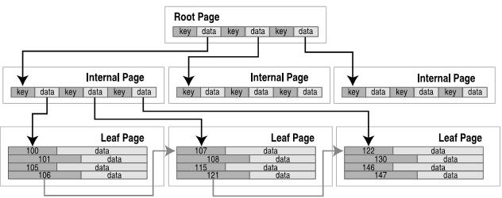
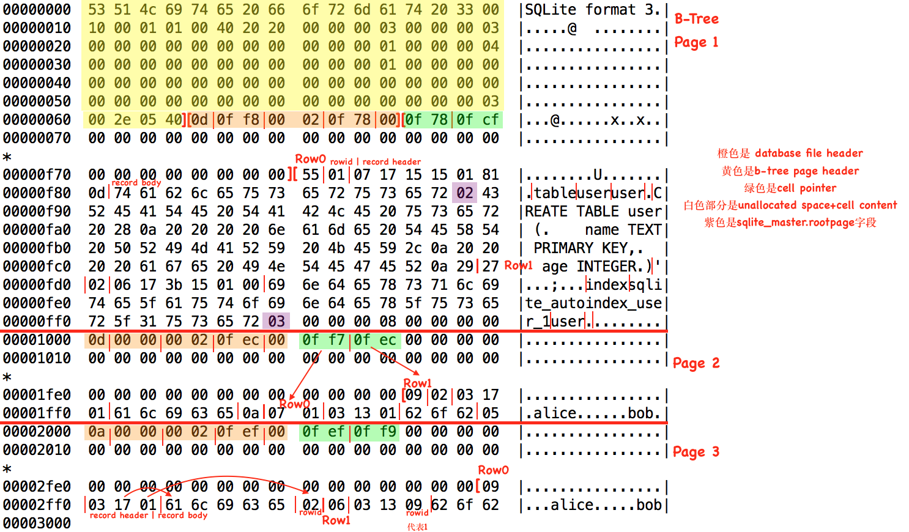

sqlite剖析（1）——文件格式¶
sqlite 数据库中的每一张表为一个 b-tree ，b-tree 的每一个节点映射为磁盘上的一个固定大小的 page （文件读写的最小单位），表中的一行数据映射为 b-tree 上叶子节点中的一个键值对，键为 rowid 1 。
b-tree 的中间节点中保存了 K 个键和 K+1 个指向子节点的指针（child page number）。
b-tree page 的格式如下：
page header |
cell pointer array |
unallocated space |
cell content array |
叶子节点的键值对，中间节点的键和指针都存在 b-tree page 的 cell 中。cell content 中是 cell 的实际内容，格式由其所在的 page 类型决定。cell pointer array 里是每个 cell content 的起始位置。同一个页面里所有的 cell 是按键的升序排列的，知道了所有 cell 的位置就可以进行二分查找了。
对于叶子节点，cell 的格式如下：
payload length |
rowid |
payload |
payload 中为实际的行数据，由该行所有的字段按照表定义时的字段顺序拼接而成，也叫 record 2 。
表上如果有索引，每一个索引也是一个单独的 b-tree。该 b-tree 的键值对的键为 索引的字段值 ，值为 rowid 。
用户创建的表，表的索引的相关信息存在 sqlite 的内部表 sqlite_master 中，数据库文件的第一个 page 就是 sqlite_master 的 rootpage 。sqlite_master 表的 schema 如下：
sqlite> .schema sqlite_master
CREATE TABLE sqlite_master (
type text,
name text,
tbl_name text,
rootpage integer,
sql text
);
我们创建一个简单的 sqlite 数据库：
$ sqlite
sqlite> .open --new x.db
sqlite> CREATE TABLE user (
name TEXT PRIMARY KEY,
age INTEGER
);
sqlite> INSERT INTO user VALUES('bob', 5);
sqlite> INSERT INTO user VALUES('alice', 10);
下图为该数据库文件的结构说明：
sqlite 的文件格式的官方文档： https://www.sqlite.org/fileformat2.html 。
从数据库文件的格式，我们可以大致推断一个查询语句的执行过程。
查询 sql_master 表，找到要查询的表及其索引信息。
如果有用得上的索引，读取索引，过滤出符合条件的行的 rowid 。
根据 rowid 再去读表，如果还有没有索引的查询条件，再过滤得到最终的行返回。